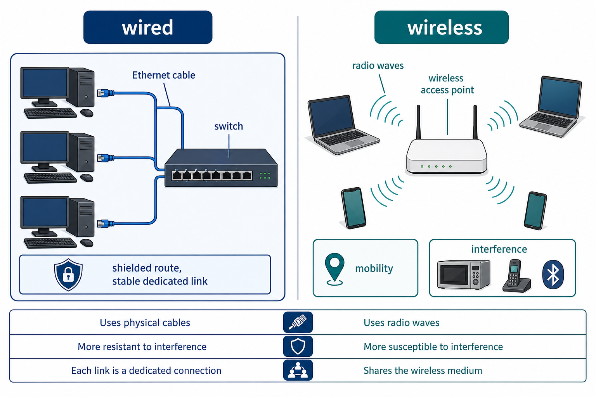

Wired and wireless create different constraints
S2.07.A01
Visual overview
Wired and wireless links create different constraints

Visual transcript
- Wired Ethernet carries signals through cable to network equipment.
- Wireless clients use radio waves through a wireless access point.
- Wireless provides mobility but shares a medium affected by obstacles and interference.
Core explanation
Wired devices send signals through a physical cable. A cable provides a guided path and can offer stable high capacity and reduced exposure to radio interference, but installation restricts movement and may require building work.
Wireless devices send electromagnetic waves through space. This supports mobility and flexible installation, but range, obstacles, competing signals and unauthorised reception attempts must be managed.
Security is not guaranteed by either category. Wired links still need access control and wireless links need strong authentication and encryption.